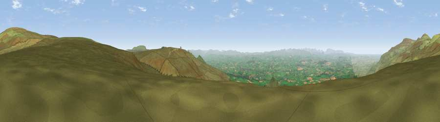

Viewpoint near Dufton
#3702 in England · top 6% of its area beats it · near DuftonThe view, rendered

A 360° render of this exact spot computed from the terrain model, tree cover and land cover — summer colours, afternoon light, calibrated against photographs of famous viewpoints. Real trees, hedges and buildings will differ in detail.
The panorama
Grey silhouette: terrain skyline in each direction (720 bearings, Earth curvature and refraction included). Dashed green: skyline with trees (+15 m) and buildings (+8 m) as obstacles. Blue strip: how far the ground is visible on each bearing.
Where the view opens
Wedge length = distance to the farthest visible ground on that bearing (vegetation-aware). Rings at 10, 25 and 50 km.
What fills the view
94% grassland · 3% woodland · 3% cropland
Angular shares of the visible panorama (visual magnitude), not map area. Landscape diversity 0.12 (0–1 Shannon).
Key numbers
More beautiful places nearby
The staircase of upgrades: each row has a higher view potential than everything closer. Driving times are estimates from straight-line distance, calibrated against real road routing — check an actual route before setting out.
| Place | Direction | Drive | Score |
|---|---|---|---|
| Dufton Pike | SW · 3 km | ~7 min | 73.7 |
| Great Dun Fell | NNW · 4 km | ~9 min | 77.8 |
| Little Dun Fell | NNW · 5 km | ~10 min | 78.4 |
| Cross Fell | NNW · 7 km | ~14 min | 78.7 |
| Viewpoint near Plumpton | WNW · 22 km | ~36 min | 78.9 |
| Viewpoint near Watermillock | WSW · 27 km | ~43 min | 82.6 |
| Viewpoint near Watermillock | WSW · 27 km | ~43 min | 83.5 |
| Viewpoint near Legburthwaite | WSW · 40 km | ~59 min | 83.8 |
54.65114, -2.43895 · source: screening · position refined by local search. Computed location — check access rights before visiting.